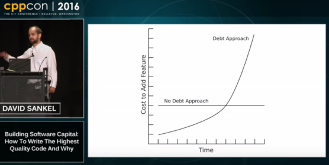

Resources#
Technical debt#
The well-known curve of software technical debt.

Maintenance costs#
The rule of 60/60 (Robert L. Glass):
- Between 40% and 80% of software costs are maintenance costs (average 60%);
- Around 60% of maintenance costs are enhancements.
Source: Frequently forgotten fundamental facts about software engineering - alternate.
This figure seems rather optimistic and the interval may more be 60-80% for maintenance costs.
(Same source)
(Last update: June 2020)